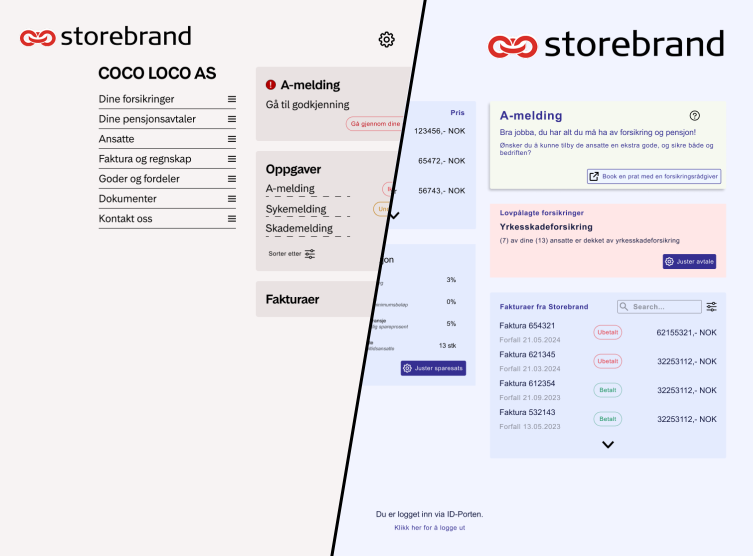

Innsiktsarbeid i Norges største pensjonsselskap
Tre måneder som UX- og tjenestedesigner i bedriftsmarkedet hos Storebrand — med fokus på å forstå kundebehov i et komplekst B2B-univers.
Oppgaven
Oppgaven vår var å finne nye måter Storebrand kan betjene sine mindre bedriftskunder på, og forstå hvorfor de eksisterende løsningene ikke strekker til.
Problemstilling: Hvordan kan Storebrand betjene sine mindre bedriftskunder bedre?
Forskning
I de første ukene brukte vi mye tid på å snakke med folk i huset, delta på lytteøkter, og til slutt gjennomførte vi også kundeintervjuer over telefon for å få et bedre inntrykk av problemområdet.

Hypoteser
Etter innledende innsiktsarbeid identifiserte vi funn og konsistente mønstre. Basert på disse formulerte vi en rekke hypoteser som skulle testes videre.

Definere data
For å få oversikt over i hvilken grad de ulike hypotesene ble styrket eller svekket av funnene, brukte vi følgende rammeverk:
Vi sorterte etter positive og negative funn. Fargen på lappene sier noe om styrken på funnet — konsistente utsagn fra kunder gir et sterkere funn og dermed en mørkere farge.
- Antall funn: Hvor mange funn per hypotese (både negative og positive). Måler relevans.
- Gjennomsnittsvekt: Gjennomsnittlig styrke på funnet uavhengig av positivt/negativt. Måler polaritet.
- Vektet sum: Σ (vekt × positiv – vekt × negativ). Måler samlet hypotesestyrke.

Sammendrag av hovedfunn
Kunder opplever at Bedriftsportalen er tilpasset store bedrifter. Landingssiden er inngangen til resten av portalen — og analysen av klikkmønstre viste at modulene kundene bruker mest, tar opp minst plass på skjermen.

Foreslåtte løsninger
Basert på innsiktsarbeidet og datagrunnlaget utviklet vi to ulike løsningsforslag: personalisering av Bedriftsportalen tilpasset mindre kunder, og integrasjon mot regnskapssystemer for å møte kundene der de allerede er.

Lærdom
Storebrand ga meg erfaring med å navigere i en stor organisasjon med mange interessenter, strenge prosesser og høye krav til faglig presisjon. Det er en annen disiplin enn å jobbe i en startup — og en verdifull kontrast.
Erfaringen bekreftet at god innsikt ikke handler om å stille de rette spørsmålene, men om å skape de rette forutsetningene for at folk deler det de faktisk tenker — ikke det de tror du vil høre.